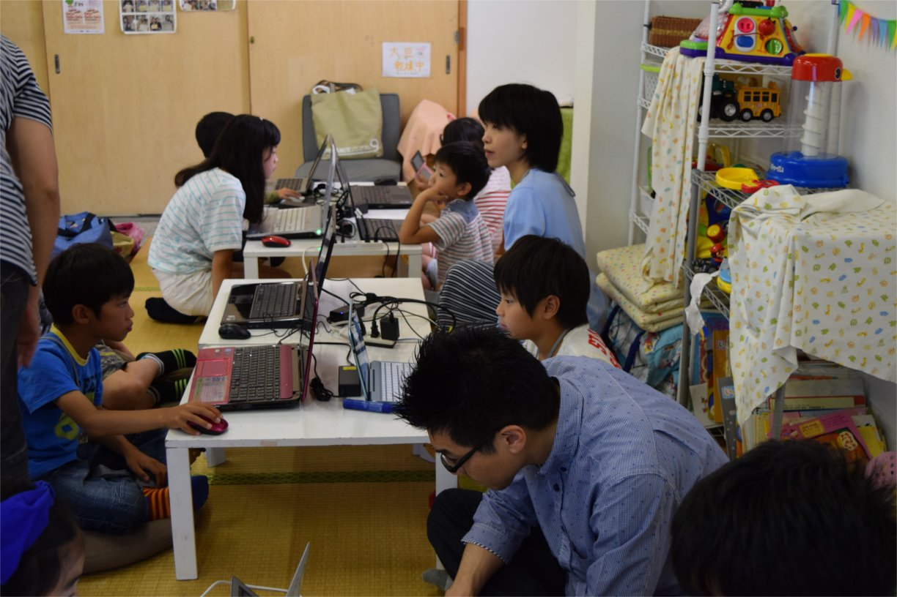
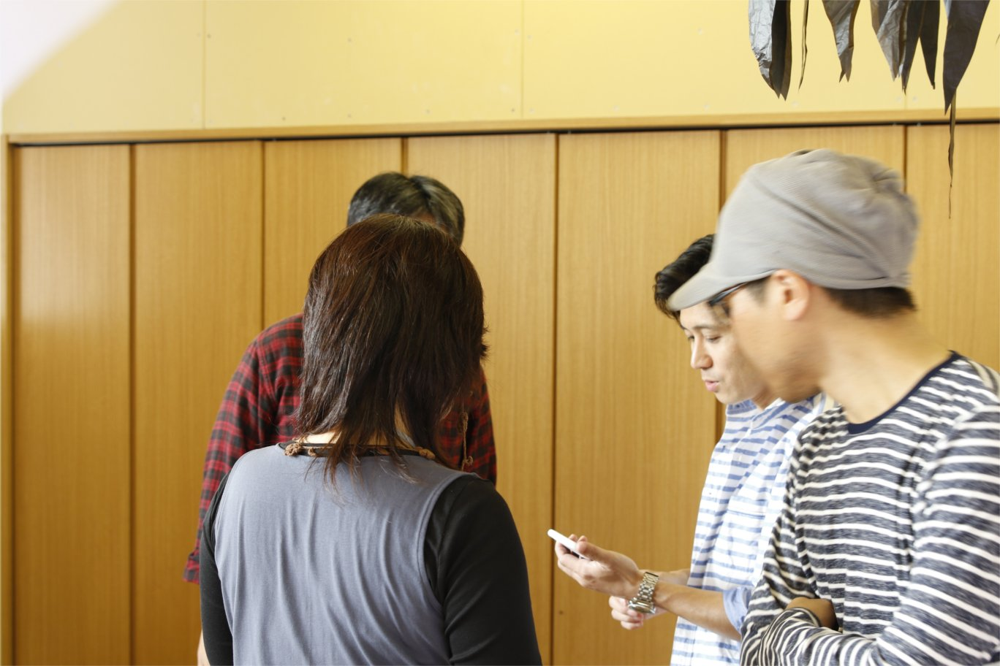

CoderDojo堺では、プログラミングを自由に制作することができます。
もし、ロジックなどで悩んでいた場合、ボランティアで参加しているメンターに相談することができます。
初めて参加する忍者（子ども）には、Scratchを利用して、操作方法を含めてチュートリアルを行っています。
このチュートリアルも必須ではなく、自由にプログラミングしてもらって構いません。
Dojoの最後には、忍者（子ども）たちが作った作品を、みんなの前で発表してもらっています。
この発表会は、未完成でも構いません。どの様なものを作っていて、以降、どの様にしていくかを発表してもらっています。

CoderDojo堺は、忍者（子ども）たちにプログラミングを通じて「ものづくりの楽しさ」を学んで欲しいと考えています。
作るものは、なんでも構いません。プログラミングは、ゲームなどのアプリケーション、ホームページなど、様々なものが作れます。

CoderDojo堺のDojoは、１回約２時間になります。
プログラミングするには、その時間はとても短いと思います。
そこで、Dojoは、わからない事を相談しにくる場とし、メンターと一緒に考え、忍者（子ども）が答えを出す場所にしたいと考えています。

メンターはボランティア活動なので、忍者（子ども）の事だけを考えるのではなく、大人も一緒にプログラミングを楽しんで欲しいと考えています。
※CoderDojoでは、ボランティアとして参加してくれている大人をメンターと呼んでいます。
CoderDojo堺の運営は、サポートしてくれるメンターや、会場費などの運営にかかる費用をサポートしていただくことにより継続できています。
もし、あなたに出来ることがあればCoderDojo堺を一緒に育ててください。
CoderDojo堺では、定期的にプログラミングクラブ活動のDojoを行っています。
子どもの参加申し込みは、こちらからお願い致します。
泉北ニュータウンまちびらき５０周年事業
「泉北ニュータウンまちびらき５０周年事業」とは、２０１７年で泉北ニュータウンが生誕５０周年を迎えました。
５０周年を祝う目的で、泉北ニュータウンの新たなまちの形成につながるイベント企画の一般公募が行われ、CoderDojo堺を主宰する田重田が市民委員として採択され、CoderDojoも参加する事が決まりました。
CoderDojo堺では、メンターや忍者（子ども）たちが、Scratchで作成したプロジェクトをScratchのスタジオにアップし、公開しています。
よろしければ、そちらも見てみてください。